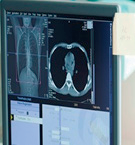
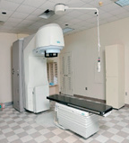

Profesioni i mjekut është shumë i rëndësishëm. Ai kujdeset për shëndetin e njerëzve. Mjeku ndihmon në zbulimin dhe mjekimin e sëmundjeve. Pas shkollimit, mjeku premton se do t’i ndihmojë pacientët gjatë gjithë jetës së tij. Dikur, mjekët punonin edhe pa pajisje moderne – ata përdornin stetoskopin për t’i kontrolluar pacientët dhe për të zbuluar sëmundje. Sot, ky profesion është përmirësuar shumë, sepse ka pajisje të reja dhe teknologji moderne.

Thello dijet
Profesioni është një punë që kryhet nga një person i përgatitur në mënyrë të veçantë, qoftë përmes arsimit, qoftë përmes kurseve trajnuese. Njeriu zgjedh profesionin që ka dëshirë dhe mëson e specializohet për ta kryer atë punë. Secili profesion ka rëndësinë e tij. Puna në vendin tonë dikur është kryer me vështirësi për shkak të mungesës së mjeteve të punës. Me zhvillimin e teknologjisë, sot, edhe te ne, si në të gjitha vendet e botës, puna kryhet me mjete bashkëkohore. Çdo profesion që ka njeriu, duhet të bëhet me përkushtim dhe përgjegjësi.